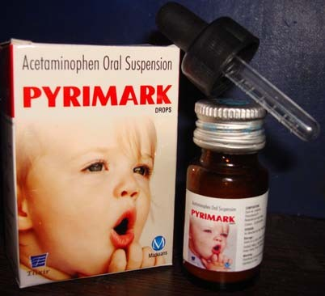

Indications:- Analgesic and Antipyretic.
-

Paracetamol Oral Suspension

Paracetamol
SUSPENSION PRESENTATION:
Each 5 ml contains:
Paracetamol IP 250mg/125mg

Paracetamol :
Paracetamol is classified as a mild analgesic. It is commonly used for the relief of headaches and other minor aches and pains and is a major ingredient in numerous cold and flu. Paracetamol relieves pain and fever in adults and children. It is used mainly for its pain relief properties.
The UK granted a marketing authorisation (licence) to Edict Consulting for the medicinal product Paracetamol 250mg/5ml Oral solution on the 28th February 2008. This is an over the counter medicine used in the treatment of mild to moderate pain including headache, migraine, rheumatic and muscle pain, nerve pain, toothache, sore throat or period pains. It may also be used to help reduce fever associated with cold and flu.
The active ingredient is paracetamol which has pain-killing and fever-reducing effects similar to those of aspirin and is useful in the treatment of mild to moderate pain. It has weak anti-inflammatory effects.

- Mild to moderate pain such as headache, migraine, neuralgia, toothache, sore throat, period pain and rheumatic aches and pains.
- Fever (pyrexia).
- Relieving aches, pains and fever associated with colds and flu.

Paracetamol exhibits analgesic action by peripheral blockage of pain impulse generation. It produces antipyresis by inhibiting the hypothalamic heat-regulating centre. Its weak anti-inflammatory activity is related to inhibition of prostaglandin synthesis in the CNS.
- Absorption: It depends upon dosage form. Time to peak, serum: oral: 10-60 minutes; may be delayed in acute overdoses. Decreased rate of absorption with food.
- Distribution: Present in most body tissues; crosses the placenta and enters the breast milk. Protein binding: 8-43%(at toxic doses).
- Metabolism: Hepatic via glucuronic and sulphuric acid conjugation. At normal therapeutic levels, glucuronide metabolites are metabolised to reactive intermediate (acetylimidoquinone) which is conjugated with glutathione and inactivated; at toxic doses, glutathione conjugation is insufficient leading to increased acetylimidoquinone which may cause hepatic cell necrosis.
- Excretion: Plasma half-life: 2.7 hours (adults); 1.5-2 hours (infants and children); 3.5 hours (neonates). Neonates, infants and children up ≤10 years excrete less glucuronide than adults. Half-life may be longer after toxic doses. Excreted mainly via urine (2- 5% unchanged; 55% as glucuronide metabolites). Total body clearance: 18 L/hours.

Paracetamol works as a painkiller by affecting chemicals in the body called prostaglandins. Prostaglandins are substances released in response to illness or injury. Paracetamol blocks the production of prostaglandins, making the body less aware of the pain or injury. Paracetamol reduces temperature by acting on the area of the brain that is responsible for controlling temperature.

BEFORE TAKING THIS MEDICINE TELL THE DOCTOR ABOUT ANY MEDICAL PROBLEMS AN ALLERGIES THAT PATIENT HAS NOW OR HAS HAD.
Usually drug interactions occur when it is taken with another drug or with food. Before you take a medication for a particular ailment, you should inform the health expert about intake of any other medications including non-prescription medications. Paracetamol increases the risk of liver damage in chronic alcoholics. Increased risk of toxicity with other hepatotoxic drugs or drugs which induce microsomal enzymes e.g. barbiturates, carbamazepine, hydantoins, rifampicin and sulfinpyrazone.

The most commonly reported adverse effects are:
Medicines and their possible side effects can affect individual people in different ways. Skin rash is most common side effects that are known to be associated with this medicine.

- Caution in People who already face liver problems
- Patient with kidney problems should not take Paracetamol tablets.
- Caution in Pregnant women.
" Response to medications may vary from one individual to another, contain side effects like (dizziness, vomits) that have been reported very rarely with the medicine may affect some patient's ability to drive, operate machinery."

Store below 25°C, in a well closed container in cool, dry place, away from direct heat and light.

From the above discussion, it can be concluded that Paracetamol oral suspension could improve the quality of life with improvement of mild to moderate pain such as headache, migraine, neuralgia, toothache, sore throat, period pain and rheumatic aches and pains and Fever.
We are making superior quality of Paracetamol oral suspension that is used to treat mild to moderate pain such as headache, migraine, neuralgia, toothache, sore throat, rheumatic aches and pains and Fever. Our offered suspension is processed using high grade chemical compounds by our experienced quality controllers that ensure its quality, purity and chemical properties. Highly treasured among the clients for its reliability, accurate composition, excellent physical and purity, this oral suspension is offered to our esteemed clients at the market leading prices.